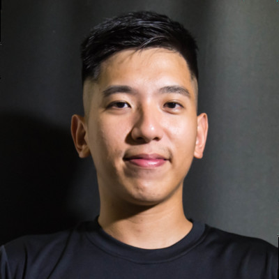
法律系、銀行、運動新創、自學程式。每個轉折當下的選擇與取捨。
零產品、零客戶。用「理解客戶的痛」取代「賣未來的產品」，怎麼知道驗證過了。
賽事影音怎麼從人工剪輯走到自動偵測、自動產出、自動發布。台灣聯盟與媒體的實戰。
給想踏入運動 × AI 的人：缺口在哪、創業者可以怎麼選。
全台去錄、一支一支剪成 Highlight，寄給國外教練。一年零薪水、零商業模式，我住在辦公室。
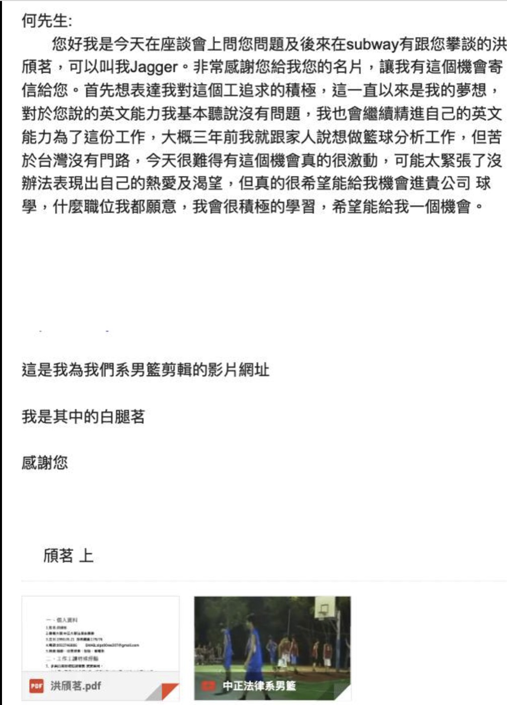
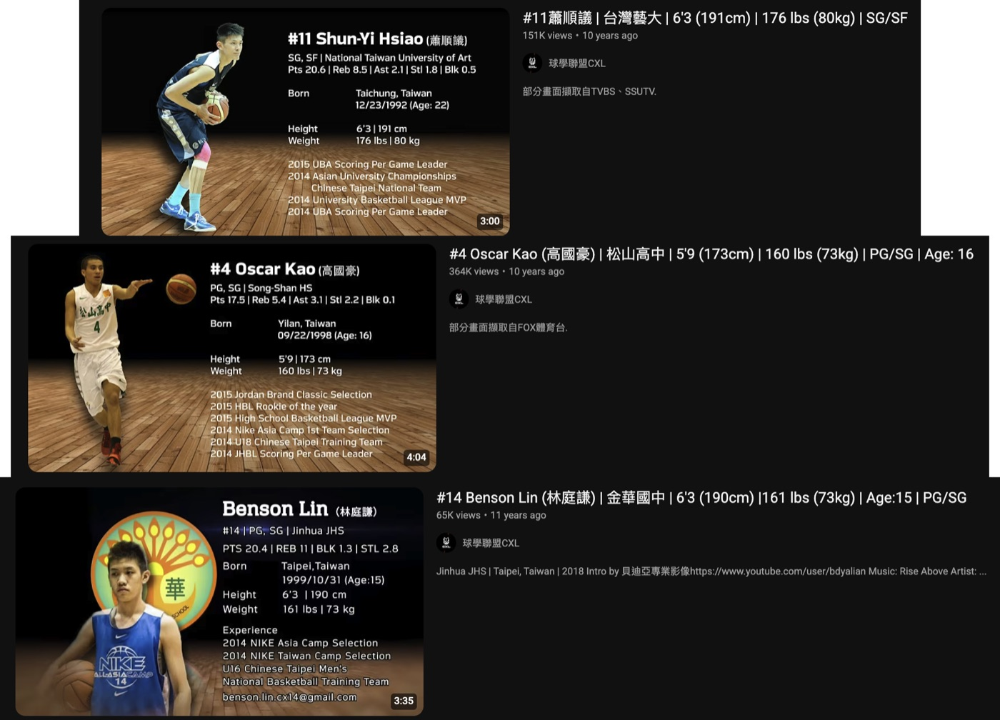
100 萬美金進來、公司開始擴張，然後工程師全部離開。公司空了，我跟不上。
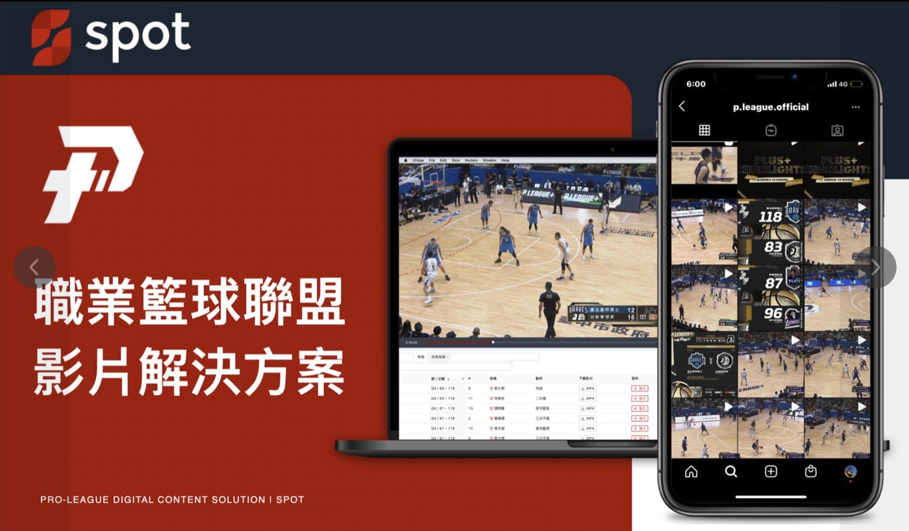
一個全新的聯盟，也許願意試新東西。我們就拿著這份簡報，一家一家去。
雲端剪輯、多比例輸出、綁 YouTube 直接發。把我在球學熬夜做的事，壓成比賽當下可以完成的事。
對方聽到的不是功能清單，是「這個人知道我每個週末在幹嘛」。
2020 年 11 月成立，12 月簽下第一份影片資料庫合約。有人願意為「還很醜的東西」付錢，才叫驗證。
拿下聯盟，等於拿下聯盟底下每支球隊的使用場景。這是「一份合約」變「一條產線」的轉折。
直式影片、Shorts、自動發布。沒有人要的功能我們不做；客戶催著要的，就是 roadmap。
年度訂閱、多年約。每一場比賽都要跑一次的流程，才值得被自動化。
比賽熱度
一個人一個晚上趕出個位數影片，整場做完要 5-7 天
做出來的時候，熱度早就歸零。
產量依據：Spot 客戶每場完賽後平均自動產出 20 多支；越南職籃 VBA 2025 賽季三週、8 支球隊 1,510 支。人工每場 3-5 支為一般製作量。
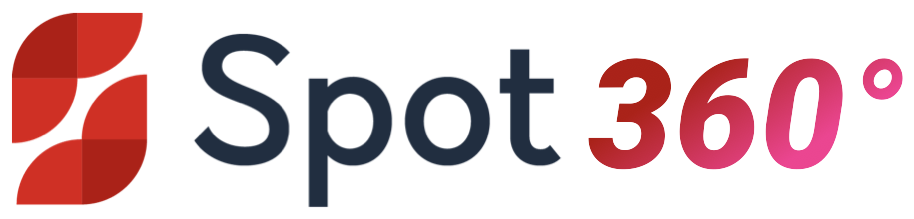
賽事直播：訊號全部進雲端
轉播 PGM、場館機位、手機訊號上雲端，多視角對齊同一條時間軸，再接聯盟即時數據。
AI 賽事解析：賽中即時產出精華
AI 聽主播講評、看比分圖卡與球、讀即時數據。比賽還在進行，系統已完成評分、下標與剪輯。
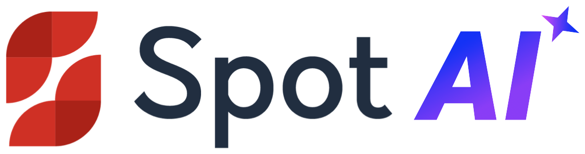
內容自動化：一個人盯整個週末
直式重構圖、標題、說明、縮圖、品牌套版到發佈，開箱即用；每一環都能切回人工。
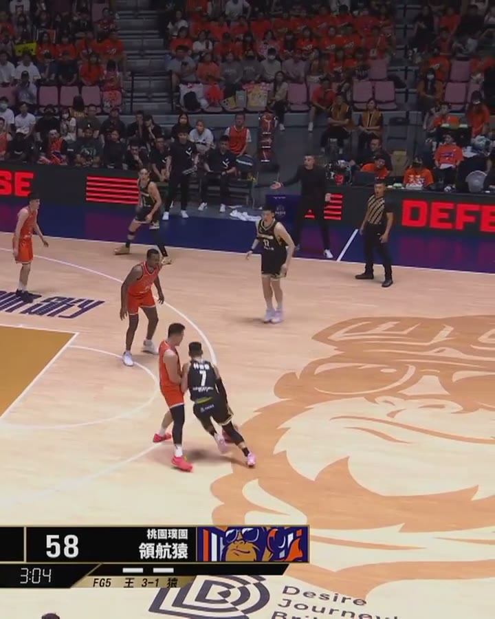
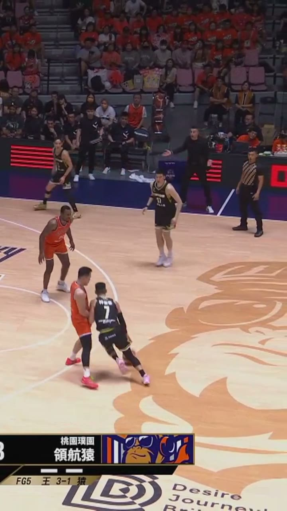
規則與文案皆為 Automation 後台實際產出內容。每一環都可以切回人工：AI 片段瀏覽、剪輯器修正、代操服務。
不必逐鏡打關鍵格。SpotCrop 追蹤場上動作，自動重新構圖。
Reels、Shorts、TikTok 與貼文版本，都從同一支轉播畫面出來，不必重剪。
社群版本跟著精華一起產出，不是幾小時後才由剪輯補做。
16:9 轉播畫面
追球定位 / 自動構圖
4:5 貼文
9:16 直式
偵測進球、切點、轉直式、套品牌、上字幕，比賽中完成
葡萄牙 1-0 進球LiveMode 直式成品
2026 FIFA 世界盃，LiveMode TV（泰國）34 場賽事。成品畫面自帶 LIVE MODE tv 台標與主播小窗。
全項目偵測
任何有觀眾的運動
已在緯來體育台全賽程上線：賽程上的每一種運動，都不必逐項設定、不必訓練模型。
合作客戶與賽事
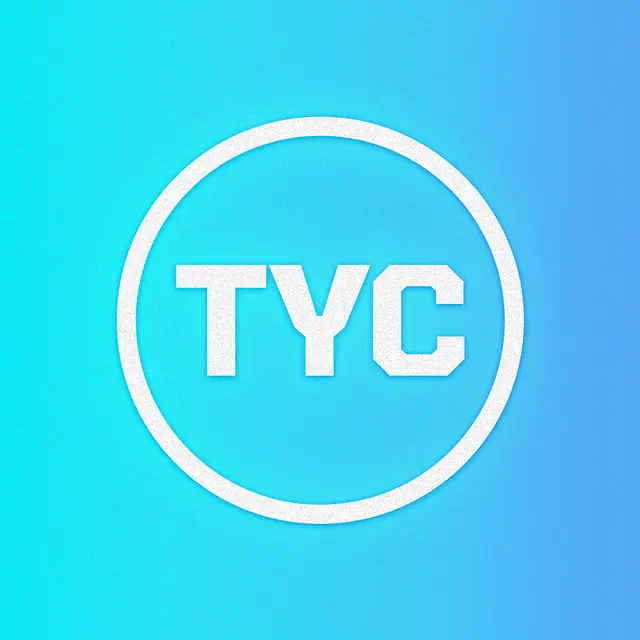
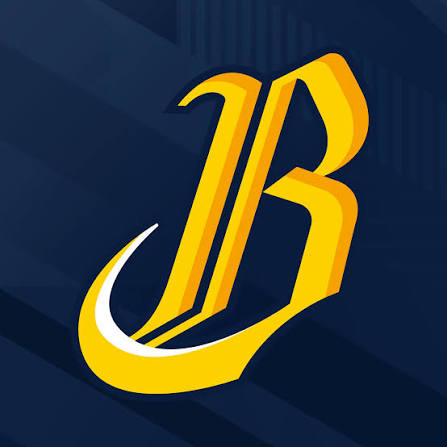
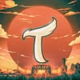
電視台從第一次接觸到簽約，花了三年。運動客戶有訊號、有賽事，一個月就決定。先拿快週期養團隊，再去啃慢週期。
遠端互動頻率不夠、時區與語言成本高。多年約的業務要自己負責續約，不能簽完就交出去。
每一路訊號要一台 GPU 機器各自跑偵測；多機位的時間差還要人校正。規模化卡住的常常是這種不性感的環節。
國際競品有品牌信任。我們贏在即時（比賽當下）、在地團隊、價格，以及直播、剪輯、AI、資產管理一站式。
2018 年從零學程式。2026 年，Spot 大部分新功能是我和 AI coding agent 一起寫的。核心團隊 6 個人，服務 50 多個聯盟與媒體。
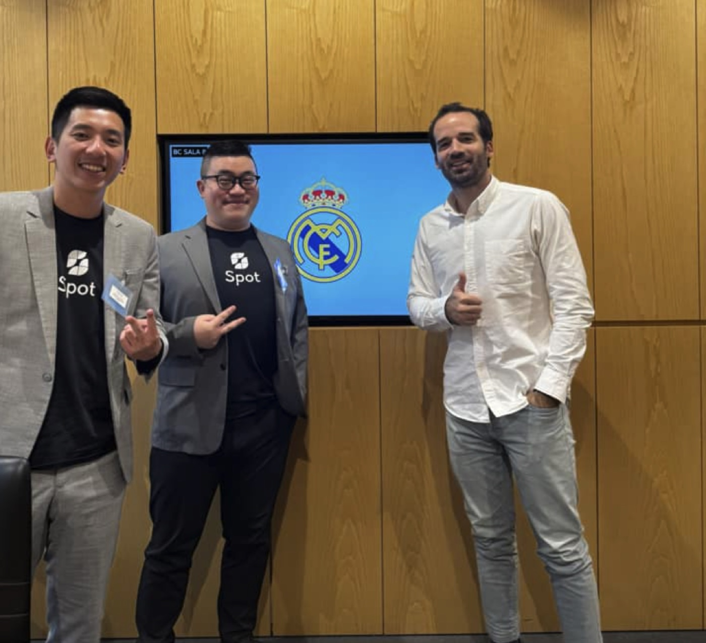
我剪過一兩百支 Highlight，所以我知道哪裡痛。痛點要親身，不然你賣不出「我懂你」。
一份簡報出門不是魯莽，是最便宜的驗證。對方付錢、而且回來要更多，才算過。
運動客戶一個月決定，媒體三年。順序反了，團隊會先餓死。用快的養團隊，帶著案例去啃慢的。
問自己：哪一個環節每場都要有人盯著？那就是你的產品。規模化就是把這些環節一個一個拿掉。